Sobre:
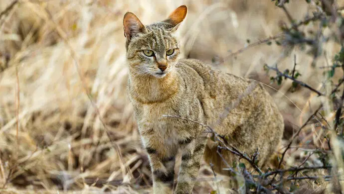
Você sabia que a relação entre humanos e gatos começou há cerca de 10 mil anos? O que iniciou como uma parceria prática para proteger estoques de grãos evoluiu para uma conexão profunda e privilegiada. E é aqui onde começamos a entrar na história da raça felina.
Acredita-se que todos os gatos modernos descendem de um ancestral comum: o gato selvagem do Oriente Médio (Felis Sylvestris Lybica), tendo estudos de ADN (DNA) que confirmam que tanto os gatos de raça pura como os gatos comuns contêm de herança genêtica com o gato selvagem africano.
Os gatos despertaram várias visões de diversos lugares e de diversas épocas. Do Egito, onde respeitavam os gatos e os reconhecia como seres sagrados, para a Idade Média com ascensão do Cristianismo, onde a imagem do gato foi associada ao paganismo e ao demônio, indo tão longe quanto o próprio papa da época, Papa Gregório IX, determinar o extérmino dos felinos.
No entanto, esse preconceito não durou muito tempo com o surto da Peste Negra no século XIV, onde a diminuição drástica da população de gatos facilitou a proliferação de ratos, os quais carregavam as pulgas que manifestavam a doença.
Hoje em dia, a visão preconceituosa e negativa em relação aos gatos mudou para algo mais positivo e atencioso. São adimirados por sua inteligência e independência, e claro, sua lealdade como companheiros ao lado dos cães.
Fontes:
https://www.historiadomundo.com.br/curiosidades/os-gatos-na-historia.htmhttps://www.purina.pt/artigos/gatos/gatinhos/comportamento/origem-gatos
Volte ao início
Curiosidades :
Algumas curiosidades curiosas sobre os gatos!!!
A classificação dos gatos domésticos (Felis Catus) se mostra desta forma: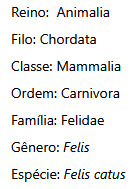
Os gatos domésticos partilham cerca de 95% do seu DNA com os tigres, dando a ter vários comportamentos similares como:
- São carnívoros obrigatórios (precisam de carne para obter nutrientes essenciais).
- Passam 30% a 50% do tempo a limparem-se, em parte para neutralizar o seu odor perante as presas.
- Ambos marcam território através de arranhões, urina e fricção facial (libertação de feromonas).
- Amassar com as patas é um instinto herdado usado na natureza para preparar ninhos ou verificar a segurança do terreno.
Nos Estados Unidos, um gato chamado Oscar tinha um talento único em sentir quando alguém estava próximo de falecer.
Ele era um dos gatos terapêuticos num centro de enfermagem e reabilitação, observando os movimentos dos pacientes ao seu redor e passava tempo com pacientes que estavan a beira da morte.
Os gatos possuem cerca de 470 papilas gustativas, mas a quantidade é menor que a do ser humano, que tem 9.000.
Fontes:
https://brasilescola.uol.com.br/animais/gato.htmhttps://www.purina.pt/artigos/gatos/gatinhos/comportamento/origem-gatos
https://www.megacurioso.com.br/estilo-de-vida/125055-5-historias-de-gatos-que-realizaram-feitos-incriveis.htm
https://www.hillspet.com.br/cat-care/behavior-appearance/cat-senses-explained
Volte ao início
Galeria:
Segue abaixo artes de gatos retratados antigamente
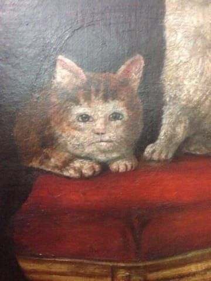
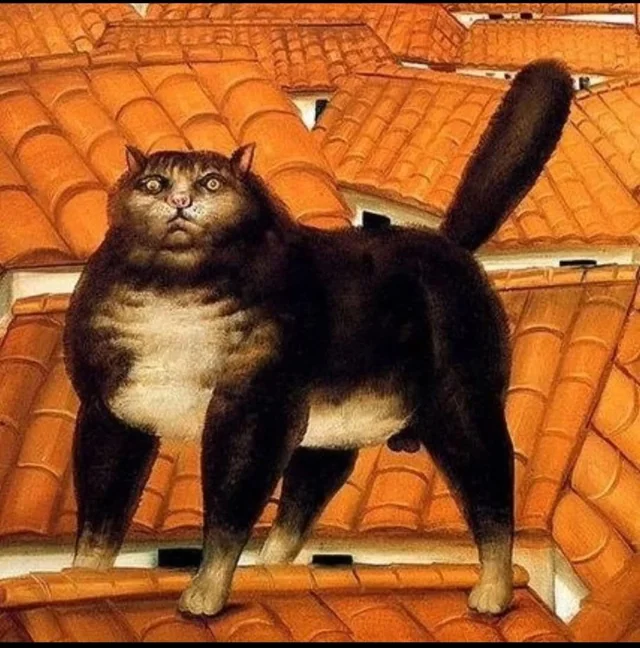
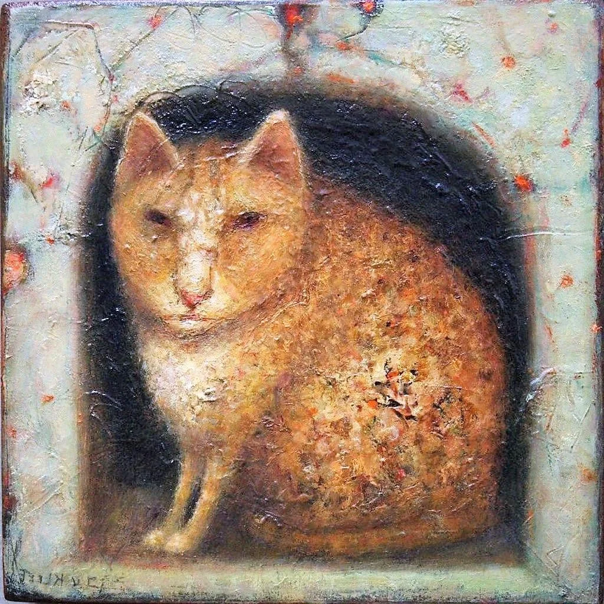
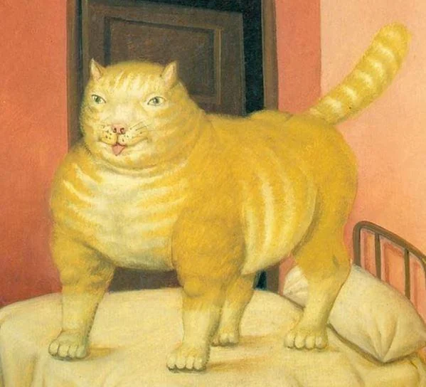
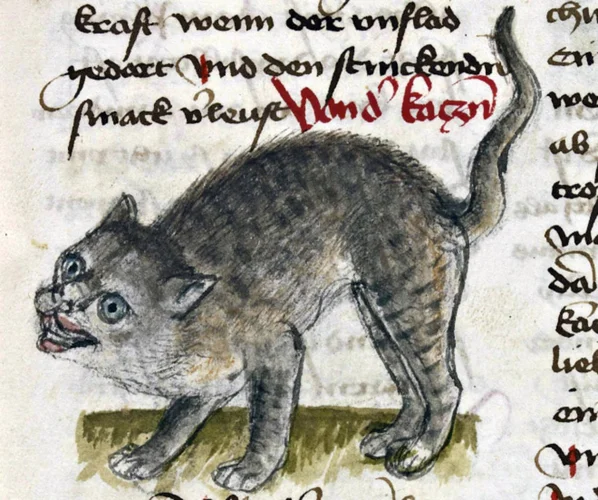
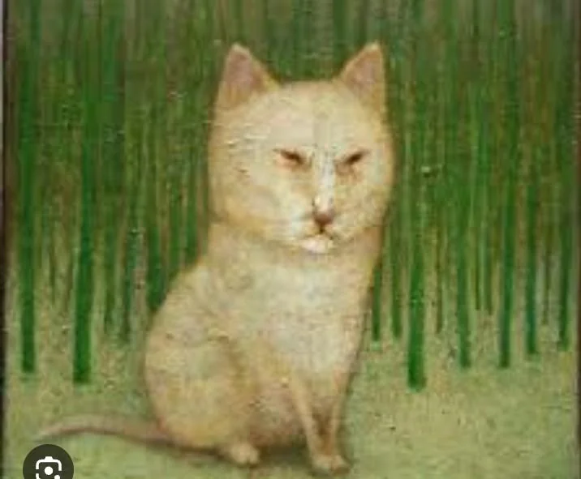
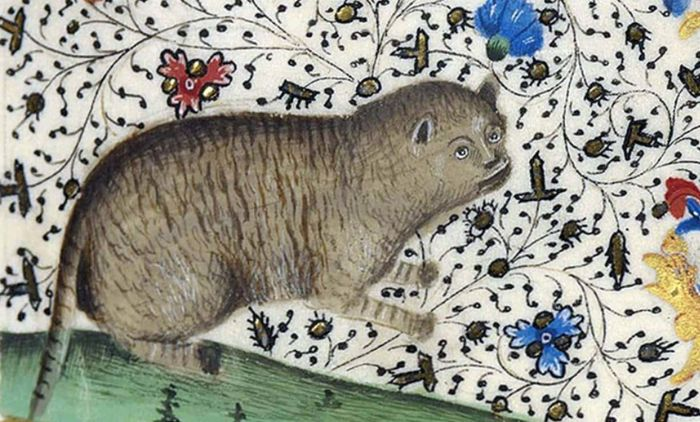
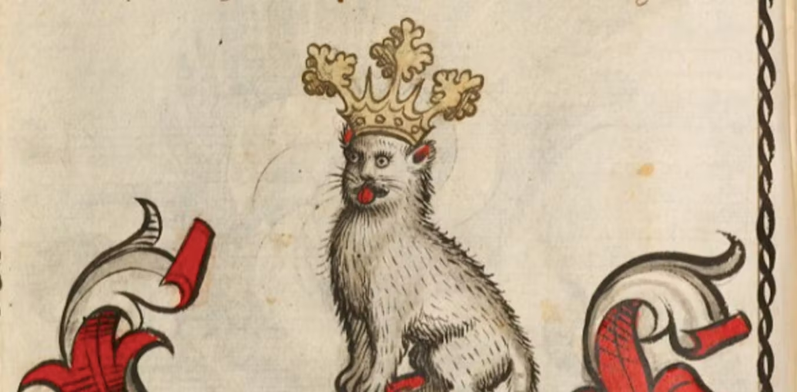
Fontes:
https://www.reddit.com/r/MedievalCats/comments/1gw57c5/the_way_that_medieval_art_perfectly_displays_the/?tl=pt-brhttps://www.megacurioso.com.br/artes-cultura/106769-voce-ja-reparou-nos-gatos-bizarros-que-a-galera-da-idade-media-desenhava.htm
Volte ao início
Painel
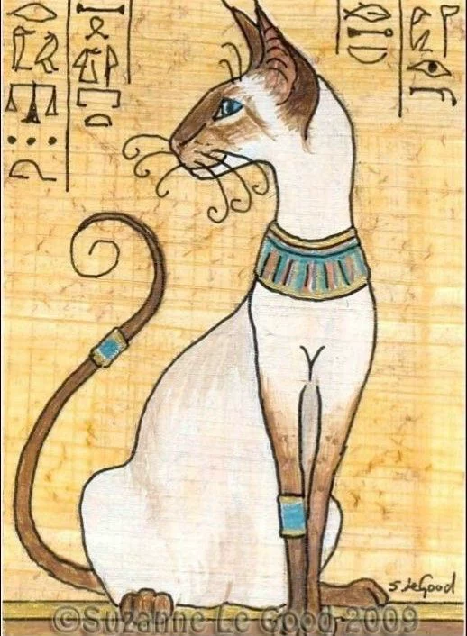
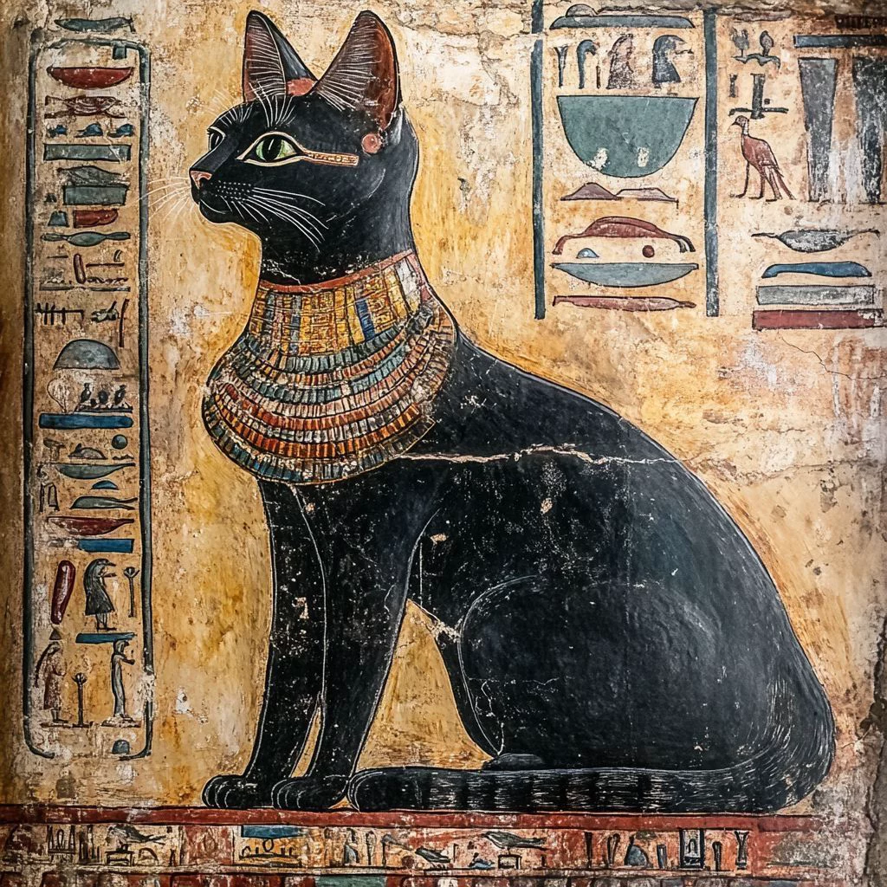
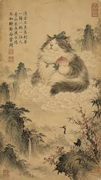
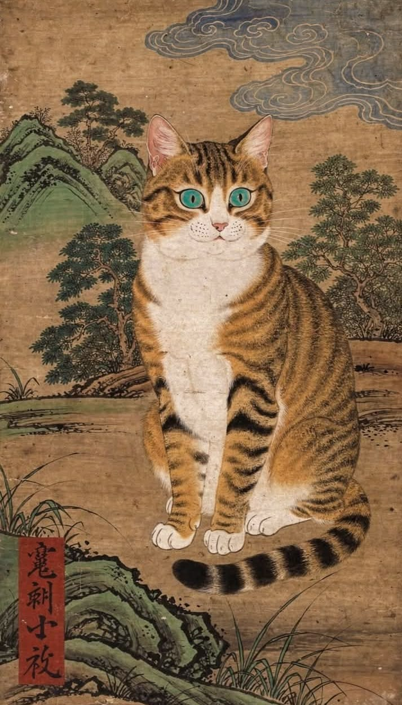
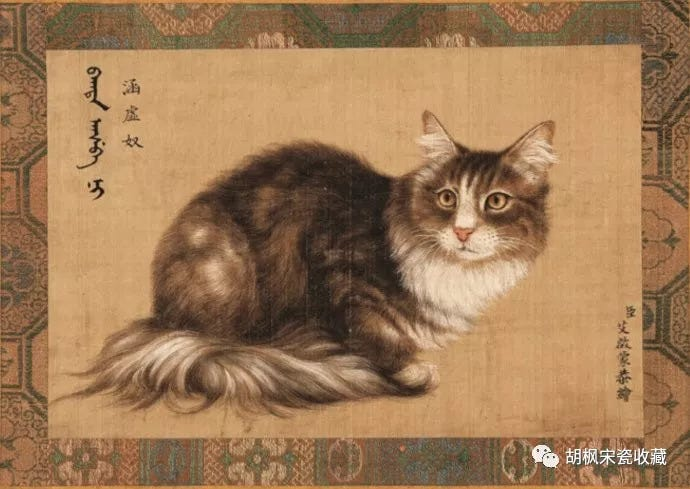